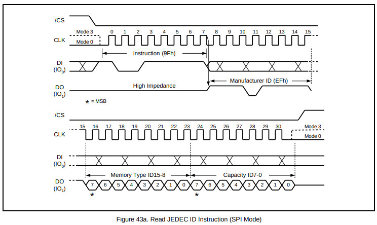
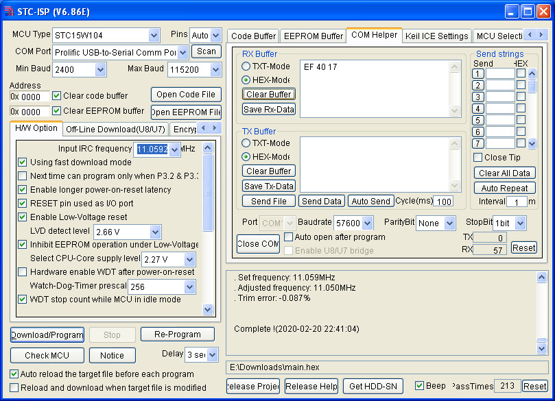

Steward
分享是一種喜悅、更是一種幸福
微處理器 - STCmicro STC15W104 - Assembly - W25Q64 - Read JEDEC ID
參考資訊：
http://plit.de/asem-51/
https://github.com/nimaltd/w25qxx
http://www.stcisp.com/stcisp620_off.html
https://sourceforge.net/projects/mcu8051ide/
https://www.winbond.com/resource-files/w25q64fw_revk%2007012016%20sfdp.pdf
SPI時序如下：

main.s
uart_tx set p3.1
spi_cs set p3.4
spi_do set p3.5
spi_di set p3.2
spi_clk set p3.3
.org 0h
jmp _start
.org 100h
_start:
setb spi_cs
setb spi_do
setb spi_di
setb spi_clk
; Read JEDEC ID (9Fh)
mov a, #9fh
clr spi_cs
call spi_txrx
call spi_txrx
call uart_tx
call spi_txrx
call uart_tx
call spi_txrx
call uart_tx
setb spi_cs
jmp $
spi_txrx:
mov r0, #8
mov r1, a
mov r2, #0
s0:
clr spi_clk
mov a, r1
rlc a
mov r1, a
jc s1
clr spi_di
sjmp s2
s1:
setb spi_di
s2:
setb spi_clk
jb spi_do, s3
clr c
sjmp s4
s3:
setb c
s4:
mov a, r2
rlc a
mov r2, a
djnz r0, s0
mov a, r2
ret
; 57600,N,8,1
; RC 11.0592MHz
uart_tx:
mov r0, #8
clr uart_tx
mov r1, #44
djnz r1, $
u0:
rrc a
jc u1
clr uart_tx
sjmp u2
u1:
setb uart_tx
u2:
mov r1, #44
djnz r1, $
djnz r0, u0
setb uart_tx
mov r1, #44
djnz r1, $
ret
.end
編譯
$ mcu8051ide --compile main.s
完成
